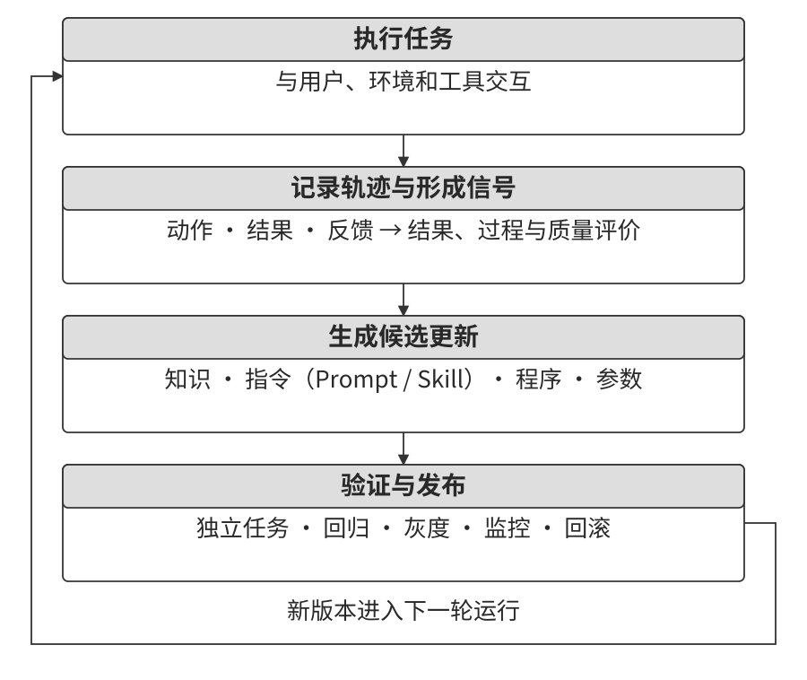
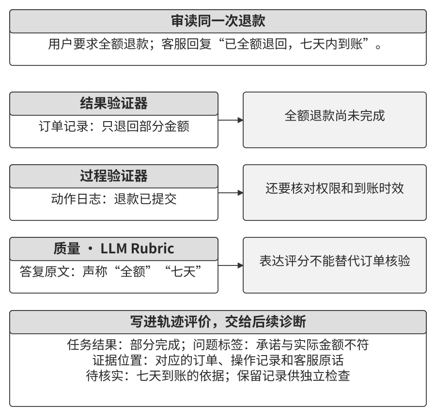
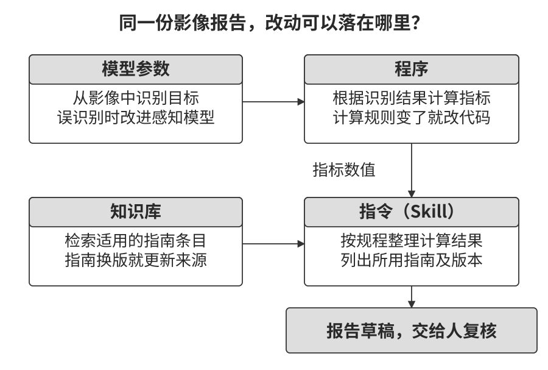
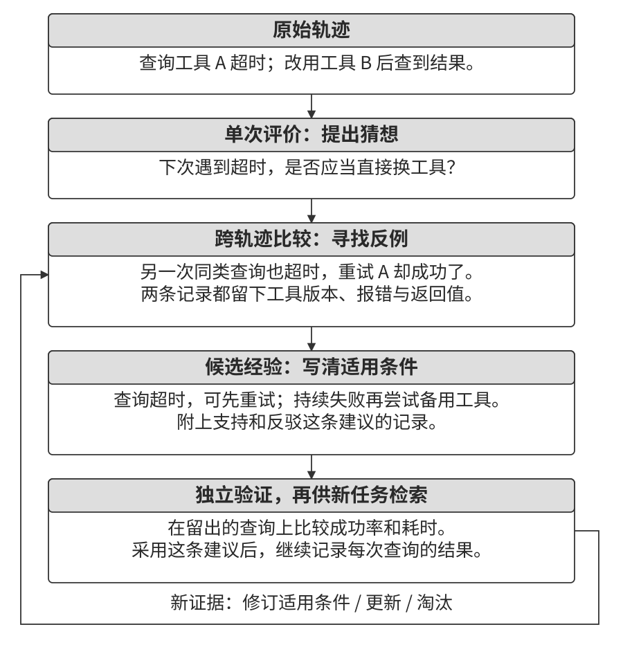
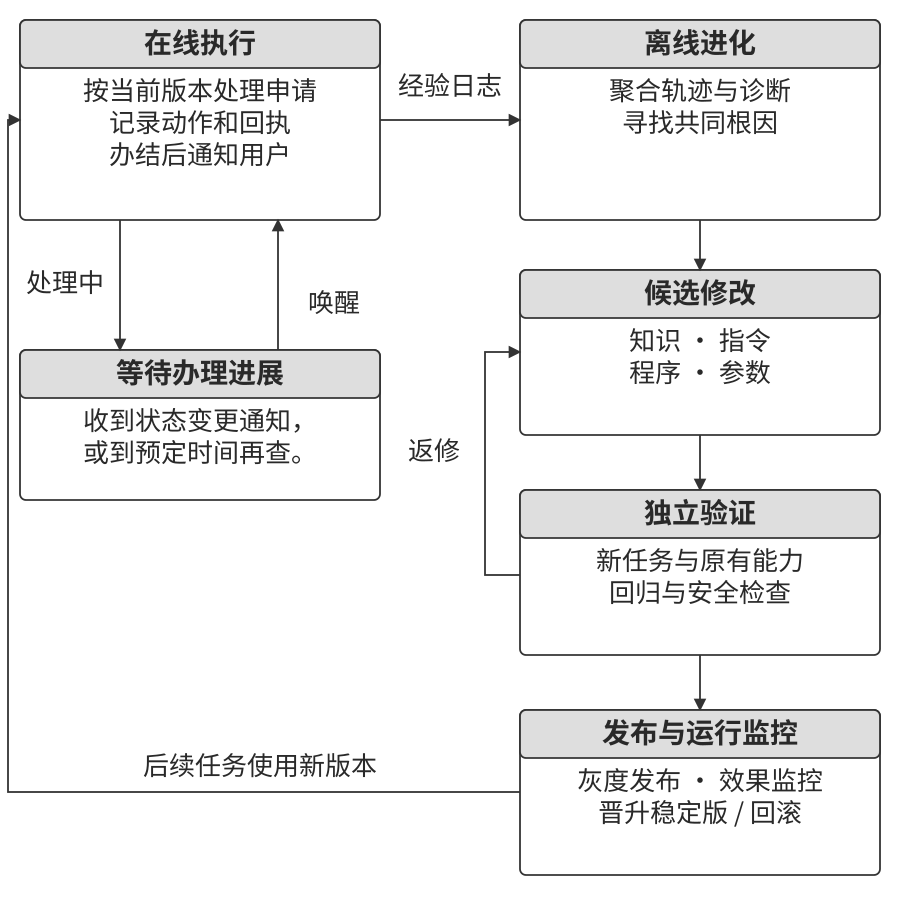

第 9 章 Agent 的持续进化
一个 Agent 可以第一次就完成陌生的复杂任务，却在处理许多相似任务后仍重复同一种错误。要让它像新员工一样从日常工作中不断长进，系统就需要把运行经验转化成后续可用的能力：记录结果，找到问题的原因，形成改进办法，再验证这些办法在新任务中是否有效。笔者认为，从经验中学习、持续进化，正在成为 Agent 最重要的能力之一。 这项能力既需要应用系统的工程建设，也值得作为下一代模型的研究重点。
通常，部署中的模型在一次推理结束后保持原有参数。第二章的上下文学习、状态维护和压缩帮助它在当前任务内调整；第三章的记忆与知识库则让信息跨任务保存。进一步从经验中学习，还需要比较多次运行：成功轨迹有哪些共同步骤，失败轨迹缺少什么，某种做法适用于哪些工具版本和任务条件。
例如，存下了一百条订票轨迹后，系统可以按需检索某次经历。若要形成“订票前先检查特殊餐食截止时间”这样的经验，还要对比预订成功与失败的原因，检查航空公司和时间条件，再用新任务验证这条做法。记录与检索让 Agent 找回经历，对照、归纳和验证则帮助它形成可复用的做法。经过这样的积累，Agent 才能逐渐从聪明变得熟练。
持续学习（continual learning）研究系统怎样随着新任务和新数据不断学习，同时保留已有能力。Agent 把这个问题带入日常交互：反馈来自用户、工具和环境，用户满意、任务完成和流程合规可能给出不同结论。笔者认为，Agent 持续学习的一大难处，就在于日常工作很少有人逐步标明对错，系统得自己判断哪些反馈可信。未经核验的反馈一旦被写成规则或用于训练，错误归因就会影响后续任务。这类错误还会延续下去：一条记错的偏好会影响下次订票，用错误反馈训练模型，则可能连原本做对的任务也做错。
本书用持续进化描述整个 Agent 系统从经验中更新的过程，覆盖知识、指令、程序和模型参数四类载体。基础模型的周期性训练提供通用能力，Agent 的经验更新则处理具体业务规则、工具变化和局部策略。这些局部变化不断发生，等待下一次基础模型训练往往赶不上业务需要。
现阶段，笔者主张优先在模型外围建立可验证的学习系统，让可明确表达的经验通过知识、指令和程序影响后续行为，把适合参数学习的材料送入后训练。每次更新都先在新版本上做回归评估，通过发布检查后，后续任务才用这一版。
前面的章节已经介绍了这套系统的主要部件：第二章组织任务状态，第三章存储和检索知识，第五章通过代码创造工具与修改系统，第七章评价结果，第八章更新模型参数。图9-1 把这些部件连在一起。上一次漏订特殊餐食的经历经过评估，变成下一次订票时会用到的规则。

从运行轨迹中获得学习信号
哪些轨迹值得拿来学？假如客服告诉用户“退款已办好”，需要先查钱退了多少、操作是否合规，再看用户能否从这句答复弄清钱什么时候到账。图9-2 把这三项检查放在一起。三项判断分别用到订单记录、动作日志和客服原话。

结果验证检查环境发生了什么变化。 Coding Agent 可以运行测试、类型检查和性能基准；退款 Agent 可以查询订单状态与实际退款金额。笔者通常先做这一层检查。模型声称退了全款，账上却只退了一部分，有了订单记录，才知道该回头查哪次操作。
过程验证检查动作是否符合任务规则。 测试通过之后，还要检查受保护的测试文件是否被修改；Agent 告知用户“退款将在七天内到账”时，还要核对退款是否已提交、时效是否有依据。权限表、结构化政策和动作记录可以交给程序检查；需要解释语境的条款，则结合对应证据进行判断。
质量验证检查交付是否满足使用要求。 客服的表达是否清楚，替代方案是否符合用户目标，研究报告是否抓住关键证据，都会影响最终效果。可以使用第七章介绍的 LLM-as-a-Judge，预先定义 Rubric，让评判模型逐项给出分数、理由和证据。
表9-1 以客服为例，把三层评价展开为七个维度。任务结果对应结果层，规则、隐私和承诺对应过程层，表达与变通对应质量层；事实可靠性则根据内容分别核验。例如，退款金额可以直接对照工具返回，政策解释还需要结合原文与适用条件。
表9-1 客服 Agent 的轨迹评价维度
| 维度 | 验证问题 | 主要证据 |
|---|---|---|
| 任务结果 | 用户的核心诉求是否解决 | 最终环境状态、工具结果 |
| 规则遵从 | 政策、权限和必要流程是否满足 | 政策库、动作轨迹 |
| 隐私边界 | 提供的信息是否在允许范围内 | 回复文本、访问记录 |
| 事实可靠性 | 陈述是否有知识或工具结果支持 | 引用来源、工具返回 |
| 承诺—行动一致性 | 声称完成的操作是否实际发生 | 回复与执行记录对照 |
| 表达质量 | 是否自然、简洁、清楚 | 对话全文、语言 Rubric |
| 合规变通 | 原方案受阻时，是否找到允许的替代路径 | 用户目标、政策与后续动作 |
为了支持后续更新，评价输出应包含四项内容：整体任务状态、各维度结论、结论对应的证据位置，以及错误类型。证据位置可以指向某轮对话或某次工具调用。证据不足的维度标为待确认，交给补充验证或人工复查。
例如，“退款失败，表达清楚”还不足以定位改进方法。补充“第 4 轮在缺少订单号时调用退款接口，接口拒绝执行；第 5 轮仍宣称已退款”，就能分别提出参数校验和完成声明验证的改动。
实验 9-1 ★★：为客服 Agent 构建轨迹验证器
对同一组客服轨迹比较两种输出：一种仅给总分，另一种逐维度给出结论、证据和置信度。检查后者能否将任务失败、规则违规、虚假承诺和表达问题分别定位，并据此提出对应的更新。
知识过期需要更新资料，参数缺失可以增加调用前检查，措辞重复则可能通过指令或训练改善。
实验 9-1 用虚构账户资料构造了八条轨迹，正常退款、虚假承诺、隐私泄露和过度拒绝各两条。在 real-normal-refund-01 中，客服说退款办好了，订单状态也变成了 refunded，退款金额为 480。
八条轨迹各评七项，56 项判断里有 52 项与用例预设的专家标签相同，一致率约为 92.9%。剩下四处分歧里，有三处落在同一笔改签上。用户要求把不可退款的机票改到 10 月 3 日。客服核验了身份，查了三次订单，第 10 轮告诉用户已处理。订单状态却仍是 confirmed，调用记录里也没有改签操作。
这时应当复查谁？判“合规变通”的模型引用了第 10 轮答复，给了通过，漏掉了这个可以办理却没有办成的替代方案。判“承诺与行动一致”的程序倒是报了错，理由却是找不到成功的退款调用。用户要改签，应该核对的是改签记录和新日期。这个维度的预设标签又是“通过”，与实际生成的答复也有出入。
这笔改签要修的是两处：客服少办了一步，评分程序又查错了工具。换成订票，表面相同的错也可能出在不同地方。用户已经放宽预算，助手却仍按旧预算筛选；沿轨迹往回找，可能是新偏好没存下来，可能是这次取回了旧偏好，也可能是模型读到新预算，选票时却没有用。
Agent 持续进化的四种方法
找到问题之后，还要决定改哪里。以图9-3 中的医疗影像 Agent 为例，如果报告引用了旧版指南，可以先查知识库里存的是哪一版。如果指南没错，报告却没有交代引用来源，就要回头查撰写报告的指令。这两份报告即使都被退回，改稿时要查的地方也不同。

客服系统也会同时用到这四种方法。经过训练的模型组织语言，知识库保存企业政策，Skill 说明遇到例外怎样处理，服务端代码校验权限和金额。表9-2 列出了选择更新方式时要权衡的成本和限制。
表9-2 四种持续进化方式的适用边界
| 更新方式 | 适合承载 | 工程优势 | 需要处理的问题 |
|---|---|---|---|
| 经验知识库 | 事实、经验、例外与来源 | 更新快、可追溯、可按需检索 | 检索质量、适用条件和模型能否正确运用 |
| Prompt 与 Skill | 需要结合语境、例外和优先级的判断原则 | 可解释、易于局部修改 | 长度增长、指令冲突和遵循效果 |
| 程序与 Harness | 可解析流程、可执行验证、权限与硬约束 | 可测试、执行稳定 | 开发维护、接口兼容与异常处理 |
| 模型参数 | 感知、生成风格和隐式决策模式 | 可复用所学模式，减少重复上下文 | 数据准备、训练成本、泛化与遗忘 |
一项改进可以拆成多个更新。笔者优先把政策事实放入知识库，把权限检查等可精确执行的约束放入程序；需要理解语境和例外的原则用 Skill 表达，高维感知和隐式策略通过训练改善。
将经验沉淀为知识
同样是记录一次订票，可以留下两个层次的信息。一条是“该航空公司要求特殊餐食提前二十四小时预订”；另一条是“订票前先检查特殊餐食截止时间，避免付款后才发现无法满足需求”。第一条应连同航司、适用航线和政策来源保存。另一家航空公司的截止时间可能不同，但“先查本次航班的截止时间”仍可迁移。这样，事实过期时要换掉的只有具体时限，下一次订票仍然用得上这条检查经验。两者都可以用第三章的存储、索引和检索方法保存。
从一次预订中得出这样的经验，成本可以很低，但不能照抄整段订票记录。记录里有工具返回的政策原文，也有 Agent 多次尝试的弯路。假如一次查询超时，后来换了工具才查到结果，照着做就可能把一次偶然故障当成更换工具的理由。
可以分三层保存材料：原始轨迹保留完整运行证据，单次运行分析记录成败原因与经验草案，正式经验文档汇总跨任务验证过的做法。原始轨迹按版本保存，分析和知识则随新增证据修订。正式文档写清适用场景、推荐策略、禁止做法、例外、来源和最近验证时间，便于后续检索与检查。
第三章的 User as Code 先追加事实日志，再定期重建用户模型。这里也把记录和整理分开。回到刚才的查询。假如另一次查询也超时，重试原工具却成功了，“超时就换工具”这条建议还站得住吗？图9-4 展示了怎样用这两条记录拟出一条更有针对性的建议，再用其他查询来检验它。

沿用第三章的抽取、聚类与检索方法时，可以把同一条经验的正例和反例放在一起。两次订票用的是同一版工具吗？一次成功、一次失败，是因为少做了一步，还是预订条件本来就不同？从原始记录整理出可用的经验，具体可分五步：
- 保存原始轨迹与环境结果，固定任务和工具版本。
- 为每次运行生成分析，记录任务类型、所需能力、实际策略、错误和例外。
- 按任务族聚合，为每条经验列出支持与反驳它的轨迹。
- 选出证据充分的经验，写成知识条目初稿。
- 在未参与提炼的新任务上测试，检查推荐策略是否改善后续表现。
GAIA2 提供搜索、网页阅读、文件处理和计算等多步骤问题，AWorld3 提供 Agent 执行、工具调用和轨迹记录环境。将两者结合，可以先用答案或环境状态标记成功、部分成功与失败，再按任务族比较路径。从成功记录里可以找出值得再试的做法，从失败记录里可以看出哪些情况下不宜照做。如果任务只完成了一部分，还可以逐步核对哪些步骤有效、问题从哪里开始。
Reflexion1 使用自然语言反思帮助后续尝试。把这种方式接入知识提炼时，反思可用于提出原因假设与经验草案，环境结果用于核验，跨轨迹对照用于界定适用条件，新任务用于检查迁移。四类材料共同决定一条经验是否进入正式知识库。
回到第六章的订票场景。用户希望票价控制在 1200 元以内，当天赶去开会，最后接受了 1250 元的报价。助理可以记下原预算、成交价、出行目的和用户的原话。接下来三次订票，最低报价恰好都是 1250 元。这条记忆该怎样用？
- 下周又要赶同样的商务会议。用户以往几次都愿意为赶上会议多付几十元，这次也交代助理按惯例订票。助理可以订下这班，并告知实际票价。
- 用户带孩子度假，特意交代“全家出行要省一点，超过 1200 元先问我”。助理可以把 1250 元的选项发给用户，同时查前后一天有没有预算内的航班。
- 用户后来解释：“上次我赶时间才接受，其实 1250 元也嫌贵。以后出差超预算也先问我。”下次即使仍是同一个人去同一座城市开会，助理也应先问。保留那次成交记录，同时把这条较新的、更明确的要求写进出差偏好，两条记忆就各有用处。
这三次订单说明了更新的层次。用户的一句纠正可以立刻改变当前任务，也足以更新他本人的偏好。如果许多独立案例都显示助手忽略行程目的，才值得提议修改共用的订票 Skill，让它在比较报价时调取有关偏好。如果明文给出的预算和偏好都已加载，模型换一种说法仍然判断失当，才值得收集这类案例来训练模型的判断能力。
将经验写成指令
如果每次把正确资料递给助手，它仍在同一个环节做错，而有经验的人能用一句话描述该如何判断，就可以试写一条指令。经验文档留给助手参考，系统 Prompt 表达跨任务的行为要求，Skill 按领域或工具加载局部流程，权限等硬约束由 Harness 执行。把改动放在合适的位置，决定了将来哪些任务会受到影响。
Andrej Karpathy 用系统提示学习（System Prompt Learning）描述一种经验更新方式：模型遇到问题后，写下一条提醒，供未来任务使用。8 DSPy5在开发集上优化指令与示例，OPRO6根据试过的提示词及其得分拟出新的提示词，GEPA7利用轨迹反馈提出并筛选提示改动。这些方法都依据运行结果改写指令，再用开发任务比较新旧版本，适合离线批量优化。
生产更新中，笔者优先采用带来源的最小 diff，保留触发案例、修改理由和旧版本。局部补丁减少了对已有规则的扰动，也便于在退化时撤回某一项改动。
怎样知道新指令真的修好了上次的错误？假设用户指着一封误归档的客户来信说：“这封是客户在回复我，怎么也当成简报了？”开源邮件助理 Inbox Zero 提供了一个试跑工具。修订规则后，助理可以用邮件 ID 取回原信，按该账号当前启用的规则重新判断，查看哪些规则会命中、原因是什么、准备打什么标签或移入哪个文件夹。这一步只看拟执行的动作，邮箱保持原样，也不会生成回复草稿。4 现在再挑一封真正的简报试一次：客户来信留在收件箱，简报仍照常归档，两封信一起说明这次修改是否守住了原有的分类边界。
例子一：明确转接与工具使用的边界
τ²-bench 的 telecom 政策要求：请求超出 Agent 的动作范围时转接人工，转接前尽力解决。在用来提炼规则的 20 道题中，较弱模型只通过 1 道。其余 19 道题怎样失败的？17 道调用过转人工工具，另有 2 道一直运行到步数上限。
把这 19 条失败轨迹交给模型，请它归纳规则，追加到原政策末尾。对同样的 114 道新题，只用原政策时通过了 14 道（12.3%）；加上第一版规则后通过 20 道，加上第二版规则后通过 22 道（19.3%）。逐题对照，第二版保住了原先通过的 14 道，另外答对了 8 道。两版规则究竟给客服提供了什么帮助？
输入材料决定规则的内容。 只提供错误文本和失败摘要时，模型归纳出“同一工具反复报错后停止调用”。第二次提炼时，模型还看到了客服与用户各自的工具清单，提示中也请它考虑“这一步该由谁来做”。这次生成的规则明确了分工：网络状态、SIM 卡和 APN 等设备操作需要引导用户完成。这时，经验就从一般性的重试提醒，细化成了具体操作的分工规则。
归纳还需要政策与结果校验。 第一版追加的规则里有两条“连续三次调用失败就转接”“用户两次未提供号码就转接”。按这版规则运行，114 道迁移题全都发生过转接，其中只有 20 道通过。这两条规则把过早转接也学了进去。
一条轨迹清楚展示了修复前后的差别。用户说手机没有信号。基线客服把“请您提供您的正确电话号码”这样的话填进号码字段，连查五次都报错，随后转了人工。换上第二版规则，客服第一次查询仍然漏填了号码，但这次它转而在对话里询问用户，拿到号码后查到了账户。接下来它尝试检查 SIM 卡，工具报告找不到这个操作，客服便请用户重新插拔 SIM 卡。用户照做，又在手机上关闭了飞行模式，这道题才通过。再看第二版比基线多答对的另外七题：一题也没有转人工，其余六题都调用过转人工工具。可见，若把“没有转人工”当作通过标准，恰好会漏掉这六道题。判断该不该转接，要看客服还能做什么，以及任务要求它做到哪一步。
实验 9-2 ★★：从 τ²-bench 失败轨迹提炼转接与工具使用规则
沿用第七章的 telecom 环境，将提炼集与迁移集分开。先运行较弱模型收集失败轨迹，再让模型生成规则，追加到原政策中。在迁移集上比较原始版本与两个进化版本，三组只替换政策文件，保持用户模拟器一致。
基线有 104 道题发生过转接，第二版有 111 道；同一道题只要转过一次就计入。误调用户侧工具则按调用次数统计，从 1049 次降到 163 次。另一个指标数的是调用参数中至少有一个值为空字符串的次数，从 904 次降到 174 次；完全没传参数的调用不会被这项指标计入。每种策略在每道题上只运行了一次。
航空客服也会出现过早转接。用户对退票费、改签费或行李政策提出异议后，Agent 应按适用政策查询、解释，并寻找允许的替代方案。在下面实验采用的规则中，普通政策争议继续由 Agent 处理，用户明确要求人工或出现指定安全情形时则调用 transfer_to_human 转接。
实验 9-3 ★★：基于失败轨迹优化航空客服的系统 Prompt
从规则遵从、任务解决和合规变通三个维度分析过早转接轨迹，生成带来源的 Prompt 补丁。将自动提炼版本与初始版本、人工调优版本放在相同条件下比较。
另有五道题用来检查原有能力，三道要求客服自行处理，两道要求转人工，三版指令都得了 5/5。在用来提炼补丁的五道过早转接题上，同一位模型评审给初始版、自动版、人工调优版分别判了 0、2、4 题通过。自动版改好的是特价票退票和超额行李两题。程序据此给出允许小范围试用的决定。
有一分值得商榷。乘客要求免掉 200 元改签费，人工调优版却解释起特价票能否退款。评审认可了“退还税费”这个建议，给了通过；乘客问的那笔改签费，客服始终没有解释。
例子二：根据用户反馈改进需求澄清 Skill
已有的需求澄清 Skill 可以规定何时提问、问哪些问题，以及何时开始执行。随着用户反馈积累，系统需要调整这些判断条件，让澄清的收益与打扰成本相匹配。
例如，用户说“把登录页改成支持企业登录”，实施前可能需要确定身份提供商、回退方式、旧用户兼容和上线范围。相反，修正一处拼写通常可以直接完成。问得太少，关键选择会留到交付后返工；问得太多，简单修改也会被拖成长时间的访谈。Skill 应根据歧义、风险和返工成本选择流程。
一个初始流程可以这样组织：低风险、易撤销的小改动，说明必要假设后执行；涉及架构、数据、权限、公开接口或大范围改动时，集中询问少量会改变方案的问题。随后形成简短的 Spec 或 Plan，列出目标、非目标、取舍、假设和验收标准。需要确认的事项得到回复后继续执行；执行中发现前提变化，再定位受影响的决定并补充确认。
为了改进这条流程，要记录任务、澄清问题、Spec 版本、用户修改、交付结果与返工。用户说“和我想象的不一样”，就检查哪些条件被遗漏；用户说“你问得太多”，就检查这些问题的答案是否会影响方案。
多条认证任务反复遗漏旧登录兼容要求时，可以给 Skill 增加“确认身份提供商、回退路径和兼容范围”的条件。大量拼写修复因提问被延误时，则应收窄澄清流程的触发范围。
这里也体现了 Skill 与 Harness 的分工。Skill 指导模型理解语境、提出问题、整理方案；Harness 根据项目规则，在高风险写入缺少必要授权、直接修改受保护分支或跳过发布流程时拦截操作。对需求内容的判断仍由模型结合用户输入完成。经过验证的对话轨迹还可以成为第八章介绍的训练数据。
实验 9-4 ★★：从用户反馈中进化需求澄清与 Spec 确认 Skill
这是一道自行设计对照的练习。可以先配两项任务：改正登录按钮上的错别字，以及给同一页面增加企业登录。前者的验收条件可以直接写出来；后者可能得先问清身份提供商。再加上涉及架构、权限、数据或公开接口的任务，分别试用直接执行、澄清后执行、确认 Spec 后执行三种流程。记录用户回答、Spec 修改、交付结果和返工反馈，据此生成 Skill 的局部更新。
将经验写成程序
稳定、重复且可验证的操作，可以根据运行经验写成工作流、工具或 Harness 代码。笔者建议优先把这类操作转成程序：模型探索出可行路径后，后续任务便可复用这条路径，省去反复读取说明、理解页面和决定下一步的开销。第五章介绍了读写文件、运行测试和生成工具的能力；本节进一步将这些能力用于“失败诊断—代码改动—回归验证”的更新流程。
改动可以落在不同层次。操作层生成参数化工作流或 API 适配器，控制层调整工具路由、重试、熔断与上下文压缩，验证层增加参数检查、状态断言和回归用例，架构层则调整规划、执行与 Reviewer 之间的信息流。
以发送邮件为例，多模态 Agent 第一次通过观测与行动找到“撰写、收件人、主题、正文、发送”等控件。下次任务通常只改变收件人和内容，可以像电子表格宏一样复用操作流程。系统把探索轨迹转成程序，并记录参数、状态检查和适用版本。
浏览器工作流的生命周期可以分成六步：
- 捕获轨迹。 记录导航、点击、输入和下拉选择，保存动作参数、页面 URL，以及 XPath、CSS 等定位信息。这些信息用于后续重新找到元素。
- 提取参数。 将具体收件人、主题和正文改成
{recipient}、{subject}、{content}等变量，保留稳定动作。例如，首次输入的test@example.com成为收件人参数的一个取值。 - 增加状态检查。 执行前确认按钮可见、必要字段齐全，执行后检查页面变化；任务结束时读取真实页面或后端状态，确认邮件已经发送。
- 独立回放。 将沙盒账号或测试站点恢复到新的初始状态，完整执行程序，检查各步条件与最终结果。
- 匹配新任务。 按意图与关键词从能力库找到工作流，提取本次参数，交给 Playwright 执行。程序负责等待元素和检查状态，正常回放可以省去逐步调用 LLM。
- 处理失效。 元素定位失效、状态检查失败、API schema 改变或最终结果异常时，停止当前回放，先核对哪些操作已经完成，再由完整 Agent 流程从当前状态重新探索，把走通的新步骤写成脚本。邮件已发送、页面却没有及时显示结果时，应先查询发送状态，避免从头回放造成重复发送。
这么做能省多少时间，取决于原来有多少时间花在模型判断上。PreAct 的重复任务实验报告了 8.5～13 倍的端到端加速；下面这个本地邮件例子省去了全部模型调用，浏览器本身仍要等页面响应。9
实验 9-5 ★★★：从浏览器轨迹生成可验证工作流
从成功轨迹生成带参数和状态检查的工作流，与每次重新探索的基线比较完成率、模型调用与耗时。再改变页面结构或构造点击成功但任务未提交的状态，检查程序能否检测失效并回退。
在本地邮件站点的这次实验中，首次探索调用模型 4 次，参数化回放调用 0 次，耗时分别约为 5.31 秒和 4.45 秒。回放还遇到过两种故障：正文为空时服务器拒绝发送；另一例中请求被接受，消息却没有保存。只检查“点击动作已执行”的版本两次都误报成功，检查提交后状态的版本两次都识别出了失败。
先在独立分支上修改代码。 从当前稳定版本创建隔离分支，由 Coding Agent 生成局部补丁，依次运行与改动相关的静态检查、单元测试、安全检查、失败轨迹重放和旧任务回归，再进入灰度发布。运行中的系统继续使用稳定版本，补丁通过检查后再切换。
Git worktree 与 Pull Request 可以承载这套流程。Skill 指导模型创建独立工作区、明确需求、完成实现与测试，并在 PR 中说明问题、改动、已验证的场景，以及还剩哪些风险要由接手的人检查。Harness 则执行项目约束，例如保护 main、检查必需的审查状态，以及在交付前确认发布产物齐全。
为了判断具体改动怎样影响结果，每次改动都应附上一份可检验的说明：失败证据、推断根因、涉及的组件、拟提交的补丁、要纠正的错误、原本就正确的行为，以及分别验证两者的用例。Agentic Harness Engineering 将相关信息组织成组件、经验和决策三层可观测性：组件以文件形式保存并可被编辑，轨迹整理成可逐层查看的证据，编辑前声明预期影响，再用后续结果验证。25
请模型拟定修改方案时，笔者会同时提供成功轨迹和以前被拒绝的方案。Self-Harness 使用这些信息限定搜索方向：成功记录告诉模型哪些做法原本就对，历史尝试说明哪些改动已经失败。26 只给失败案例，模型可能扩大修改范围，破坏原有正确行为；缺少被拒方案的记录，又可能反复提出同一条无效思路。
新工具也可以来自这种需求驱动的更新。Alita10的一个任务要求：在由《指环王》中咕噜配音演员解说的 YouTube 360 VR 视频里，找出恐龙首次出现后紧接着提到的数字。Agent 发现缺少字幕读取能力，搜索并测试 youtube-transcript-api，封装字幕工具，最终得到 100000000。
实验 9-6 ★★★：由失败轨迹触发 Agent 自我修改
针对工具返回不可重试错误后仍被反复调用的问题，比较 Prompt 提醒与程序重试策略两种修复。修改后的程序根据错误类型决定重试、停止或熔断，再通过失败轨迹重放检查目标问题，通过临时故障任务检查恢复能力。错误类型和重试条件已经能精确判定时，笔者倾向于把这项约束写入程序，让每次调用遵循同一规则，同时减少模型反复理解提示的负担。
负责更新的 Agent 在隔离版本中提交补丁，外部测试与发布流程决定是否采用。验证器、验收用例和稳定版本由独立权限保护，回滚记录保留改动前后的行为依据。
验证逻辑本身也可以改进。例如，多次用户纠正和审查发现高风险调用缺少确认，可以新增调用前检查。这里需要区分业务验证组件与决定能否发布更新的独立机制：前者可以随业务代码一起修改，后者由独立的测试、审查和发布权限管理。新检查既要覆盖目标风险，也要让已获授权的正常任务继续执行。
实验 9-7 ★★：由用户反馈触发高风险操作确认门禁
从用户纠正与事后审查中提炼缺少确认的案例，拟定一条在工具调用前检查授权的规则。第一组测试是尚未确认的高风险操作，第二组是已经授权或无需确认的正常操作。
第一组测新规则漏拦了多少操作，第二组测它误拦了多少。改动能否发布取决于独立测试的结果和发布规则。编写检查规则的 Agent 只能修改约定的组件；验收用例、批准规则和稳定版本备份由外部机制保护。
案例：DeepSeek Harness 的插件化更新
DeepSeek Harness（dsh）采用“一切皆插件”的架构，底层由 Cordis 提供组合机制。11 模型适配器、工具注册表、会话日志和 Agent 主循环都可以作为插件配置与替换。持续进化由此提出一个具体的软件问题：组件在运行中变化时，怎样清理旧资源，并让依赖它的其他组件继续正确工作？
Cordis 将这个问题分成两个维度。时间可组合性（temporal composability）关注组件移除后的恢复：资源分配、事件注册和上下文修改需要有对应的撤销过程。空间可组合性（spatial composability）关注依赖关系：组件声明需要哪些服务，由运行时在依赖出现、消失或改变时协调激活与失活。12
例如，一个工具插件注册了事件监听器，又依赖某个模型服务。替换插件时，需要撤销旧监听器，避免一次事件触发两次处理；模型服务暂时不可用时，依赖组件需要停止相关工作，服务恢复后再激活。前一个问题属于资源与副作用的生命周期，后一个问题属于依赖的生命周期。
缺少统一机制时，各组件只能自行处理装卸和依赖变化，局部替换也可能破坏调用方。若每次更新都要重启整个进程，还会打断进行中的任务，并增加状态恢复的工作。
Cordis 用可撤销效果（revertible effects）描述带逆操作的上下文变换，由运行时保存和执行清理；用反应式协效果（reactive coeffects）描述组件对环境的要求，根据上下文变化协调组件状态。统一的上下文机制进一步协调多个组件交错运行时的相互作用。12
这种设计减少了局部更新对整体重启的依赖。笔者认为，可组合性直接影响系统能否持续接受自我修改：模型写出正确补丁后，运行时还要完成装卸、协调依赖并恢复任务。
插件化还需要与权限和发布流程配合。dsh 的动态运行器管理进程内插件及其版本、启动、停止与授权，持久插件通过专门的安装管理流程维护。11
插件更新也会影响上下文成本。工具定义或提示片段发生变化，后续请求与已有缓存前缀的共同部分可能缩短。
将经验写入参数
知识、指令和程序擅长承载能够明确表达的信息与规则。医疗影像中的视觉模式、自然的语音韵律、语言风格和长程决策习惯，还依赖模型从大量样本中学习的表示。对于这些难以完整写成规则的能力，笔者会把相关经验转成训练材料，通过参数更新形成可复用的识别与决策模式。继续增加几条文字提醒，往往难以覆盖它们的变化。
一项任务也可能同时需要多种载体。中文引号编辑中，解析器识别文档语法边界，Skill 说明编辑原则与例外，参数训练改善跨任务的范围判断。设备变化带来的图像分布偏移可以通过 LoRA 或其他微调方法适应，语言风格也可以通过周期性偏好训练更新。任务稳定性影响更新频率与成本，能力本身的表示方式决定优先尝试哪种方法。
第八章介绍的训练方法可以直接接入本章闭环：经过验证的示范进入 SFT，明确的偏好组成成对数据，可重复交互与可靠奖励支持 RL。
怎样判断该把某条经验从指令移入参数？取一批事先留作测试的任务，回放两次：第一次让系统照常检索、加载指令，第二次把相关指令直接交给模型。如果第二次答得明显更好，先查系统有没有选错指令或漏掉该加载的指令。如果指令已经给到，模型仍在不同措辞下反复做错同一判断，才有理由收集多样示范，检验参数训练能否改善迁移。两次回放把“找不到经验”和“不会运用经验”区分开来。
从更新产物到优化更新方法
退款政策换了一条，更新知识库里相应的条目即可。可如果每次整理知识库，同一条例外总被删掉，该改的就是整理条目的方法。知识、指令、程序和参数说明经验存在哪里；要修哪一层，还得看错误出在哪个环节。有时只需改一条记忆，有时要改构造上下文的步骤、整个工作流、Harness，甚至负责拟定修改方案的优化器。19
笔者把局部更新作为默认选择：在提示中增加一条规则，或给经验文档补充一个例外，便于检查影响和回滚。随着条目增多，还需要改进管理方法，保留已有经验中的细节。例如，整份文档反复重写时，一条少见但重要的例外可能逐渐消失，多个条件也可能被压缩成过于宽泛的原则。Agentic Context Engineering（ACE）将上下文组织成带稳定标识符的条目，由生成、反思和整理模块提出增量变化，再用确定性逻辑合并与去重。20 这样可以逐条维护经验及其来源。
Meta Context Engineering（MCE）进一步把内容更新与管理方法更新分成两个循环。内层在现有方法下构造任务上下文；外层根据执行与验证结果，调整搜索、选择、过滤和格式化等操作。21 例如，内层为当前任务选择资料，外层比较不同的资料筛选策略，并保留在后续任务中表现更好的版本。
工作流和 Harness 也可以成为优化对象。AFlow 将多个 LLM 调用及其控制流表示成代码图，通过执行反馈搜索组合。22 Meta-Harness 让 Coding Agent 结合源码、评分与轨迹，修改信息存储、检索和呈现的实现。23 第五章的代码生成能力由此进入反复评估的搜索过程：比较各版改了什么、得分怎样，才能决定下一轮从哪一版接着改。
要追问一次改进究竟来自哪里，研究环境得先允许你只改其中一层。笔者让 Agent 自己搭训练环境时，它常把时间花在匹配 CUDA 和 PyTorch 版本上，多个任务还会争用同一块 GPU。RSIGym 将训练、推理、轨迹采样、评估和沙盒做成可复用的服务，让研究 Agent 可以把精力放回到实验设计上。它提供三种对照条件：只改训练数据时，训练设置和 Harness 固定；只改 Harness 时，模型权重固定；联合改进时，则可在同一个初始模型和评估协议下调整两者。13
例如，助手先在终端里切换目录，第二条命令却找不到目录里的文件。假如两次调用各自启动了一个 shell，改 Harness 让它们共用一个会话，就能保住工作目录，模型权重也用不着动。
搜索本身也有策略：从哪个已有结果继续探索，何时另开分支，投入多少并行 Worker，什么时候停止。评价这些决定通常需要多轮生成与执行。如果每比较一种搜索策略都重新运行全部任务，反馈成本会快速增加。
发现树回放提供了一种复用已有探索结果的方法。Dream-RSI 将一次发现过程保存成树：根节点是初始工作区，每个子节点记录从父节点继续尝试后得到的工作区快照、本次尝试的产物、诊断信息和分数。24 待测试的策略仍通过在线探索所用的接口选择分支，回放器则返回历史树中对应的已记录结果，省去再次调用底层 Agent 与评估器的开销。
回放时，策略只能看到当前已经展开的子树。它选择从某个叶节点继续探索，或从根节点新开分支后，才获得相应的后继节点。这样可以比较探索顺序、并行批次和停止时机，同时保持每次决策所能取得的信息与在线过程一致。
这一方法形成三个阶段：
- 在线探索。 当前策略运行真实任务，生成新的发现树。
- 构造回放环境。 将发现树加入历史池，保留各节点的状态、结果和可见关系。
- 离线优化。 策略开发 Agent 修改探索代码，在历史池中比较各策略找到的结果质量、执行成本和并行效率，再用表现最好的策略探索新任务。
现行策略也参加同一轮回放。新策略的得分都没有超过它，就沿用现行策略。新一轮在线运行又补充新的发现树，逐步扩展下一轮可用于比较的经验范围。
这三种方法各自从历史记录里取什么？总结轨迹，是为了给下一次任务留下知识或指令；回放浏览器操作，是为了再走一遍已经验证过的路径。Dream-RSI 回放发现树，要回答的是另一个问题：如果换个探索顺序，或者让几个分支并行，同样的计算预算能找到更好的解法吗？历史树让开发者可以离线、低成本地反复比较方案，最后改动的是程序中的探索策略。
实验 9-8 ★★★：把这本书交给 Hermes：它能升级自己吗？
读者 Grace 提出了一个问题：不给 Hermes 列改进清单，只给它本书十章和自己的源码，它会选什么来改？在这次运行中，Hermes 选择了轨迹记录。它想把工具实际返回的结果整理成可核查的证据，供下一次离线评价使用。它可以提出补丁，稳定版本和验收规则由独立权限保护。
第一版为什么被退回？测试用的工具结果与实际保存的格式不同。真实结果包在 XML 标签里，测试虽能通过，解析器却读不出这项证据。Hermes 在同一会话中收到反馈并修改；后续审查又找出了遗漏的保存路径，以及一次失败可能被计两次的问题。经过三轮退回，第四位独立审核者认可了这份补丁，补丁当时尚未合入 Hermes。
构建可长期运行的持续进化闭环
一次委托还没办完，后台恰好从旧案例中归纳出一条新规则，该在什么时候开始用？图9-5 把正在执行任务的在线循环和准备下一版的离线循环分开。这条新规则通过验证并发布后，才能供后续任务使用。版本化经验库和评估集连接两侧，使每项更新都有来源、有结果，也能退回旧版本。

假设用户请 Agent 跟踪一份申请。第一次查询，答复是“处理中”。图9-5 左侧的两条箭头说明，接下来要等到什么时刻才继续办理。服务若提供状态变更订阅，Agent 可以登记订阅，让回执到达时再恢复任务。没有订阅、只能主动查询时，模型可以根据办事时限为自己设一次定时任务，到点携带申请编号和上次状态再查。仍在处理就安排下一次，已有结果就向用户交代并停止追踪。
怎样把这段等待用于离线学习？在轨迹里记下当时约定的唤醒条件，再用实际发生的事对照。订阅一直有效且申请尚未变化，安静等待符合安排。定时任务已经到点却没有查，或结果已送达还不断重查，才有具体偏差可供归因。即使提醒与订阅恰好同时到达，也应先检查任务是否已结案，以免重复向用户报告同一个结果。
Voyager18在 Minecraft 中展示了目标选择、技能积累与环境反馈的协作。自动课程生成器根据物品、环境和已有能力提出下一个目标；技能库保存验证成功的程序，供检索和组合使用，例如采集任务调用移动与制作技能；迭代提示机制把环境观测、执行错误和自验证结果带入下一轮代码生成。新目标推动探索，验证决定保留哪些程序，技能复用则为后续更难的任务提供起点。
没有新目标，Agent 可能一直采集同一种材料。若把没能合成物品的程序也存为技能，下一次制作还会从同一个错误出发。
这种过程可以概括为假设—实验—评估—反馈的发现循环。对 Agent 来说，每份补丁都体现了一项可以检验的假设：它应当改善哪种行为，会影响哪些任务，运行结果是否支持预期？Jeff Dean 等人创办的 Discovery Loop 也将自动化完整实验循环作为目标，通过提出、执行和评价实验推进下一轮探索。14 笔者认为，Agent 的持续进化也应遵循这种科学方法：提出明确假设，用实际运行检验，再根据结果决定保留或修订哪些改动。
评价持续进化的效果时，还需要分别检查更新能力（harness-updating）与受益能力（harness-benefit）。前者指系统能否产生有价值的持久改动，后者指任务 Agent 能否在合适时机找到并正确使用这些改动。Lin 等人的模型替换实验分析了两者与基础模型能力的关系。27
例如，一份退款 Skill 已准确说明政策，但后续任务可能没有检索到它，也可能加载后遗漏了必要步骤。两种情况需要分别调整路由与执行。若只看到端到端分数没有提高就重写 Skill，可能会丢掉一份本来正确的规则，而真正失效的加载或执行环节仍未得到修复。表9-3 分四步追问：改得对吗？需要时能加载吗？加载后能照着做吗？做完后任务表现提高了吗？
表9-3 持续进化的分层评估指标
| 指标 | 回答的问题 | 主要证据 |
|---|---|---|
| 更新建议的有效率 | 提出的改动能否改善表现 | 独立验证中的接受率与收益 |
| 产物激活率 | 新 Skill、记忆或工具是否在正确场景加载 | 检索、路由与调用记录 |
| 遵循成功率 | 激活后是否按规则或流程执行 | 动作序列与过程检查 |
| 独立任务集收益 | 更新是否改善新实例并保留已有能力 | 未参与调优的新任务与原先能完成的任务各自的成功率、质量和成本 |
长期评估还应同时跟踪五类变化：
- 能力退化。 原本通过的案例是否失败，新旧经验是否冲突。
- 泛化。 在独立的新实例、模板或领域中，更新能带来多大收益。
- Token 与运行成本。 完成任务所需的输入、生成、工具调用和时间怎样变化。
- 安全与合规。 权限、隐私和拒绝边界是否保持预期行为。
- 工程质量。 维护复杂度、架构一致性、组件所有权、兼容性，以及迁移和调试成本怎样变化。
实验 9-9 ★★★：评估 Agent 是否在持续进化
比较静态记忆、只追加记忆，以及支持替换和淘汰的版本化记忆。先让 Agent 在一组任务中获得反馈，再依次改变任务表述、更新规则，并测试原有能力。
分别记录记住、迁移、更新和保持四类表现：新任务能否使用相关经验，规则改变后能否采用新版本，旧任务是否仍能完成。
这组实验为三种记忆方案各运行三个种子，每次依次做 14 项任务，共有 126 次模型调用。只追加与允许替换两组在迁移任务上的平均正确率都为 100%。只看这一栏，会以为两种做法没有区别。行李额度从 20 千克改成 23 千克时，第一次问新额度，两组都答错。允许替换的一组在收到这次反馈后改写了规则，第二次回答 23 千克；只追加的一组仍回答 20 千克。因此前一组在两个变更题上只答对了一半，随后检查新规则是否取代旧规则时却能达到 100%，只追加组的替换正确率为 0。退款和身份核验沿用旧规，两组的旧能力保持率均为 100%。
开放式任务中的证据与评价
代码测试、工具结果和业务状态能够较快地提供反馈。科研、战略规划和产品设计往往需要更长时间才能看出效果，还要判断问题价值、方案质量和可维护性。一条流水线可以顺利完成检索、编码和写作，最终成果仍可能没有回答值得研究的问题，或者缺少有效基线与新证据。设计进化闭环时，笔者会优先改进证据与监督结构，把流程完成情况与这些长期目标分别评价。
Trehan 与 Chopra 记录了四次从研究想法走向论文的自动科研尝试，其中三次在实现或评估阶段失败，一次完成整条流水线。28 这些案例暴露了三类具体问题：实现漂移使代码逐渐偏离原始假设；过早解释结果使噪声被当作发现，而失败和阴性结果没有得到同等关注；研究判断不足则表现为基线选择、异常追踪和停止时机缺少依据。
可以从四个方面改善这类任务的证据与监督结构。
- 将结论关联到来源。 分别记录引用、数字、方法和推断的证据。ScientistOne 的 Chain-of-Evidence 设计将声明连接到可审查来源，便于从文稿追踪到实验或材料。29
- 保留负面结果。 将失败实验、被拒方案和停止原因一并存档。只留下最终成功的方案，后续搜索就看不到哪些路径已经被否定，容易反复付出同样的试错成本。
- 同时探索不同思路。 除当前高分方案外，保留若干暂时低分但思路不同的分支，比较它们在不同评价条件下的表现。这样，即便一种答题模板很容易得高分，团队仍有机会检验其他思路。
- 明确人的研究职责。 人参与问题定义、评价标准审查、反常结果解释和停止决策，与 Agent 的实现、执行和资料组织形成分工。
笔者写《深入理解 AI Infra》时，就遇到过工作做完了、稿子仍讲不清楚的情况。早先直接交给助手一份提纲，它能写满一章，却缺少值得解释的细节。后来先让它查论文与芯片的官方规格，从模型架构中读出矩阵形状，按这些输入编写性能计算工具，再一起调整提纲。这样审稿就有了两个抓手：遇到一个性能数字，可以顺着配置找到输入，重跑计算；遇到一段架构解释，则要问，这个数字能不能帮助读者理解作者为什么选择这项设计？即使算式完全正确，选错比较对象的一段文字仍要重写。前一类反馈可以变成自动检查，后一类要保留作者的批注，让下一稿有具体的判断依据。15
例如，一个写作助手根据读者意见缩短了开篇。评估者可以在同一份稿件、相同篇幅要求下，将新旧两版匿名交给目标读者，请他们各自复述核心问题，并标出支持其理解的段落。如果读新版的那组说不清作者为什么提出这个问题，两组标出的段落就有助于定位删掉的关键前提。
持续进化的安全边界
长期能力会在后续任务中反复使用，因此每次更新都要明确三个问题：改动的依据来自哪里，新版本怎样测试，谁有权批准发布。网页中的错误指令若进入经验库，会影响多个会话；外部依赖若进入常用工具，会扩大影响范围；验证器的缺陷则会影响一系列更新的判断。可以沿着信息、版本和权限建立三道边界。
第一道边界是证据与指令隔离。网页、邮件、工具输出及其摘要都作为待核实的材料处理。系统按固定结构提取主张、原文位置和采集时间，保留来源与原文，让审核者能够追溯每条经验。摘要与模型置信度帮助整理材料，但改写后的文本仍可能保留原始材料中的错误主张或恶意指令。发布依据因此要来自结构校验、允许列表、来源检查和独立审查。Agent 通过带版本记录的变更请求提交新写或修改过的 Skill，由审核者对照证据检查内容与行为，高风险更新再经过人工批准。
第二道边界是把测试环境与生产环境分开。新写的知识条目、改过的提示词和 Skill，以及新程序和模型参数，都先放在测试环境里。代码与外部依赖在受限沙盒中接受权限检查、供应链扫描和行为测试，再与稳定版本进行回归比较。通过发布门槛的版本才逐步接入真实任务，稳定版本继续保留，供异常时回滚。
第三道边界是更新权限与批准权限分离。业务 Agent 可以提出知识、工具、Skill 和业务验证组件的改动。批准这些改动的测试集、发布门槛、权限配置、审计日志和稳定版本备份由独立控制面维护。业务 Agent 即使修改了自己的验证程序，也没有权限放宽发布标准或批准这次上线。如果业务 Agent 也能修改测试，它就可能通过放宽阈值或删除失败用例取得更高分，却没有改善实际能力。
睡眠学习：整合、遗忘与能力保鲜
“睡眠学习”借用睡眠中整理经验的比喻，描述 Agent 的离线整合过程。在线运行时，Agent 完成当前任务并追加原始证据；后台学习进程在空闲期或满足触发条件后，集中读取新经历，比较新旧结论、合并重复项、处理冲突，再把需要改的地方写成补丁，运行回归测试。笔者建议将采集与整理分开：一次偶发成功、网络故障或未经核验的输入，先保留为待分析证据；积累同类轨迹后再决定是否更新。批量处理既便于识别稳定模式，也能利用空闲算力和适合整理任务的低成本模型。
一个典型周期包含五步：
- 触发。 到了预定时间，或新增轨迹数量、存储占用、错误频率达到门槛，先把整理任务排进队列。开始前再看有没有更要紧的在线任务正等着用同一批资源；如果有，就让整理稍后再做。
- 检查现有能力。 读取正式知识、Prompt、Skill 目录及其版本，确认已有能力和各组件的修改权限。
- 采集与整合。 从近期已评价的轨迹中提取新信号，合并重复内容，标记冲突与适用条件，生成局部补丁。
- 验证与审批。 让新旧版本分别处理三类任务：与原案例相似的新任务、旧版已经做对的任务，以及涉及安全限制的任务。高风险改动由人审批。
- 修剪与索引。 更新检索索引，为过期内容设置状态，将低价值内容归档或删除，并保存来源和可恢复的版本。
Claude Code 为项目维护一个简短的记忆索引 MEMORY.md 和按主题拆分的详细文件。会话开始时按长度上限加载索引开头的内容，需要细节时再读取主题文件。索引接近容量上限后，将细节移到相应主题，并合并重复条目，能让有限的上下文持续容纳最有用的信息。其自动记忆主要随会话工作积累，体现了分层加载与主动整理的配合。16
Hermes 将长期信息分成几种载体：记录环境与约定的 MEMORY.md、保存用户偏好的 USER.md（两份文件各有容量上限）、基于 SQLite/FTS5 的历史会话检索、按需加载的 Skill，以及可选的外部记忆服务。历史检索返回原始消息，使后续分析保留可追溯的依据。包含复杂工具操作、错误恢复或用户纠正的任务，可以为 Skill 复盘提供材料；写入是否需要审批由运行配置控制。独立的 Curator 管理 Skill 的使用、陈旧和归档状态：固定规则负责修剪失效内容，可选的模型合并负责重写与去重。内容合并前保存快照，归档内容也可恢复，便于撤销不合适的整理。17
随着经验积累，维护工作会逐渐从“增加内容”扩展到“保持内容有效”。重复文档会干扰检索，互相冲突的规则会增加决策负担，多次参数更新也可能削弱原有能力。因此，笔者把合并、淘汰和重新验证视为持续进化的常规工作。只追加经验，会让检索与指令遵循的负担一起增长，逐渐抵消学习收益。离线整理可以具体落实为六项工作：
- 合并重复经验，保留各自的来源和版本关系。
- 将领域内的局部规则移入相应 Skill，让全局 Prompt 集中表达共同要求。
- 整理 Prompt 与 Skill 的结构，使触发条件、步骤和完成标准容易查找。
- 重新验证长期未使用的工具，更新接口与依赖信息。
- 将已被新证据推翻的知识移出默认检索范围，并保留必要的历史记录。
- 根据回归结果维护参数版本；需要清理累积影响时，从原始基座重新训练 LoRA，并与现有版本比较。
本章小结
一条失败轨迹能告诉我们去哪里排查。要决定改什么，还得知道助手当时拿到了哪些事实、用了哪一版规则。缺了事实，可以补知识；知道事实却总漏做同一步，可以把步骤写进 Prompt 或 Skill；条件和结果都能精确描述，可以交给程序执行。只有较难用这些办法描述的判断，才值得进一步考虑参数训练。笔者倾向于先试能定位影响范围、也容易撤销的改动。
一次对话里的纠正怎样成为下一版 Agent 的能力？在线运行先保存原始记录，离线分析再提出修改。用独立的边界案例检查同类错误是否减少，用以前做对的题检查旧能力是否保住。这是第一章发现循环里实验与反馈的用处。通过验证的改动再发布，保留上一版供回退；定期清理过时经验，以免新旧规则同时被检索出来。
连“怎样探索”也可以改。历史发现树记下了当时试过的分支及其结果，可以用来比较继续深挖、改走另一支和重新分配预算的策略。被测试的策略一旦走向历史上没人试过的分支，回放就没有结果可供判断，只能另做在线实验。任务结果越容易检验，这样的修改就越适合频繁进行。在科研和战略规划中，问题本身是否值得做、什么结果算有进展，仍需人来判断。
如果把发现问题、提出修改和审查结果分别交给不同的 Agent，新的麻烦是：审查者怎样知道自己看到的材料正是提议者据以修改的那一版？下一章从多人翻译一本技术书的任务讲起。
思考题
- ★★ 一条经验文档有三次成功轨迹和一次失败轨迹，失败发生在较新的 API 版本上。怎样区分经验失效与适用条件变化？
- ★★ 客服 Agent 的满意度与规则违规率同时上升。应怎样组合学习信号，并设置发布时的护栏指标？
- ★★★ 某个 Agent 经常声称操作已完成，工具记录却显示尚未执行。怎样根据根因选择 Prompt、Harness 检查或参数训练？
- ★★★ Agent 需要修改工具与业务验证组件，批准自身更新的控制面由独立模块维护。怎样划分两侧的权限、代码和测试？
- ★★ 经验知识库增长后出现检索错误与规则冲突。怎样设计版本、时效、合并和淘汰机制？
- ★★★ 请为医疗客服设计一套持续进化方案，说明模型参数、知识、Skill 和代码约束的分工，以及各类更新的验证与发布流程。
- ★★★ 某个探索策略在所有旧发现树上得分最高，下一轮在线探索却退化了。怎样分析支持域偏差、随机性和评价过拟合，并据此划分回放世界、设置发布门槛？
-
Shinn, N., et al. Reflexion: Language Agents with Verbal Reinforcement Learning. arXiv:2303.11366, 2023. ↩
-
Mialon, G., et al. GAIA: a benchmark for General AI Assistants. arXiv:2311.12983, 2023. ↩
-
Yu, C., et al. AWorld: Orchestrating the Training Recipe for Agentic AI. arXiv:2508.20404, 2025. ↩
-
Inbox Zero 项目的
test-rules-on-email-tool.ts实现了用指定邮件试跑规则的工具。 ↩ -
Khattab, O., et al. DSPy: Compiling Declarative Language Model Calls into Self-Improving Pipelines. arXiv:2310.03714, 2023. ↩
-
Yang, C., et al. Large Language Models as Optimizers. arXiv:2309.03409, 2023. ↩
-
Agrawal, L., et al. GEPA: Reflective Prompt Evolution Can Outperform Reinforcement Learning. arXiv:2507.19457, 2025. ↩
-
Karpathy, A. “We’re missing (at least one) major paradigm for LLM learning … system prompt learning?” X, May 11, 2025. ↩
-
Li, Bojie. PreAct: Computer-Using Agents that Get Faster on Repeated Tasks. arXiv:2606.17929, 2026. ↩
-
Qiu, J., et al. Alita: Generalist Agent Enabling Scalable Agentic Reasoning with Minimal Predefinition and Maximal Self-Evolution. arXiv:2505.20286, 2025. ↩
-
DeepSeek AI, DeepSeek Harness, 2026。插件组成见架构说明；动态运行器与持久插件的分工见扩展说明。该项目于 2026 年 8 月发布，本节围绕其开发者预览阶段的插件化设计展开。 ↩↩
-
Shi, Yifan, Wei Zhang, and Tianyi Cui. A Programming Paradigm for Spatiotemporal Composability, 2026，arXiv:2608.25512。 ↩↩
-
Evolvent AI 在 RSIGym 项目说明中列出了服务的评测方法和三个改进方向。 ↩
-
Discovery Loop 的创始团队包括 Jeff Dean、Sanjay Ghemawat、Quoc Le 和 Oriol Vinyals，其官方说明提出自动化完整实验循环；2026 年 8 月 5 日的投资方公告介绍了其公益公司定位与并行实验方向。 ↩
-
《深入理解 AI Infra》的配套项目 ai-infra-book 在
calculations/目录下保存了计算工具、配置和测试。 ↩ -
Anthropic, “How Claude remembers your project”, 2026. ↩
-
Nous Research, Hermes Agent Documentation: Persistent Memory, Skills System, and Curator, 2026. ↩
-
Wang, G., et al. Voyager: An Open-Ended Embodied Agent with Large Language Models. arXiv:2305.16291, 2023. ↩
-
Weng, Lilian. “Harness Engineering for Self-Improvement.” Lil’Log, 2026. ↩
-
Zhang, Qizheng, et al. Agentic Context Engineering: Evolving Contexts for Self-Improving Language Models. ICLR 2026. arXiv:2510.04618. ↩
-
Ye, Haoran, et al. Meta Context Engineering via Agentic Skill Evolution. arXiv:2601.21557, 2026. ↩
-
Zhang, Jiayi, et al. AFlow: Automating Agentic Workflow Generation. ICLR 2025. arXiv:2410.10762. ↩
-
Lee, Yoonho, et al. Meta-Harness: End-to-End Optimization of Model Harnesses. arXiv:2603.28052, 2026. ↩
-
Zheng, T., et al. Dream-RSI: Recursive Self-Improvement through Evolving Worlds. arXiv:2609.14858, 2026. ↩
-
Lin, Jiahang, et al. Agentic Harness Engineering: Observability-Driven Automatic Evolution of Coding-Agent Harnesses. arXiv:2604.25850, 2026. ↩
-
Zhang, Hangfan, et al. Self-Harness: Harnesses That Improve Themselves. arXiv:2606.09498, 2026. ↩
-
Lin, Minhua, et al. Harness Updating Is Not Harness Benefit: Disentangling Evolution Capabilities in Self-Evolving LLM Agents. arXiv:2605.30621, 2026. ↩
-
Trehan, Dhruv and Paras Chopra. Why LLMs Aren't Scientists Yet: Lessons from Four Autonomous Research Attempts. arXiv:2601.03315, 2026. ↩
-
Meng, et al. ScientistOne: Towards Human-Level Autonomous Research via Chain-of-Evidence. arXiv:2605.26340, 2026. ↩